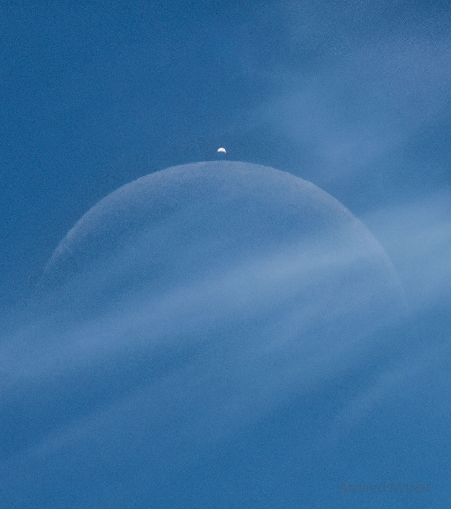
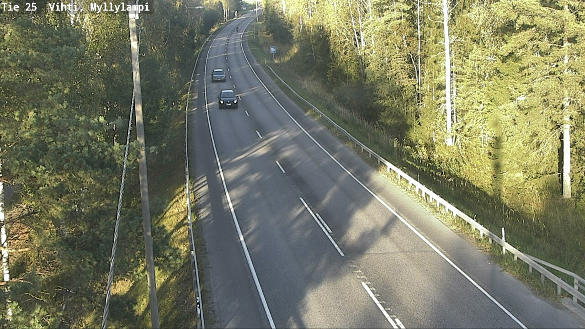
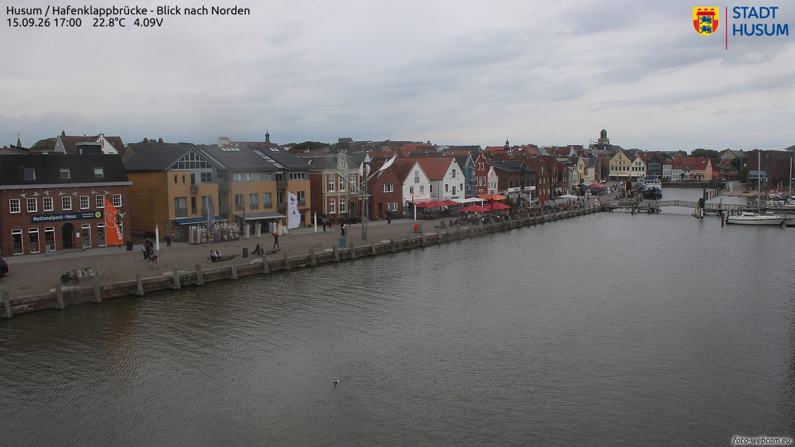
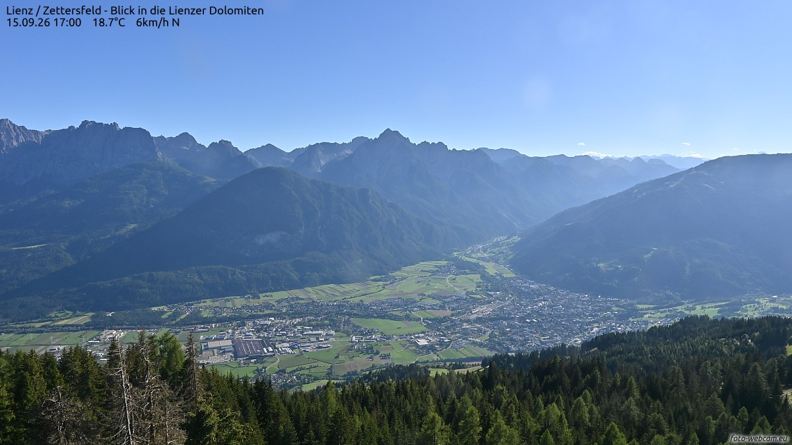
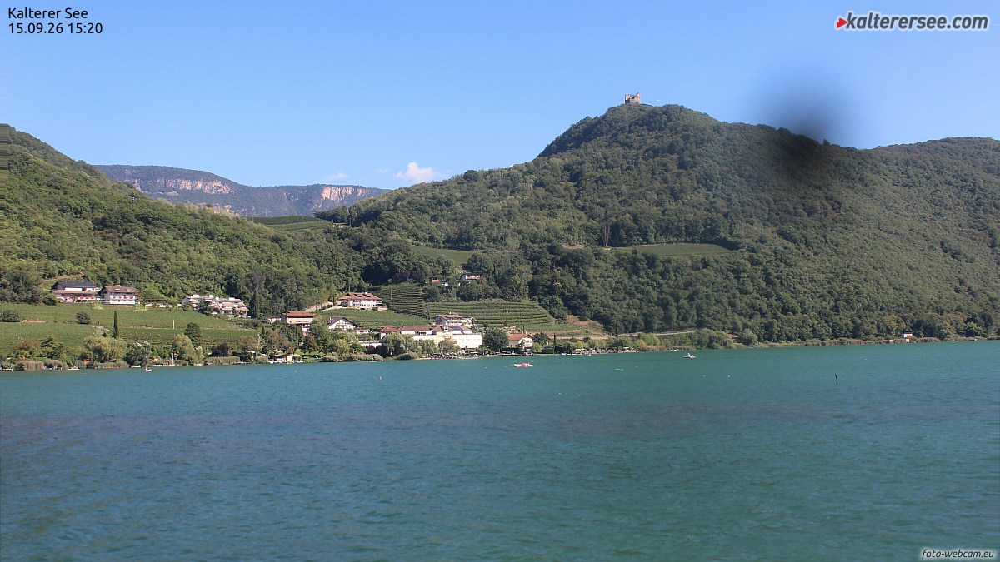
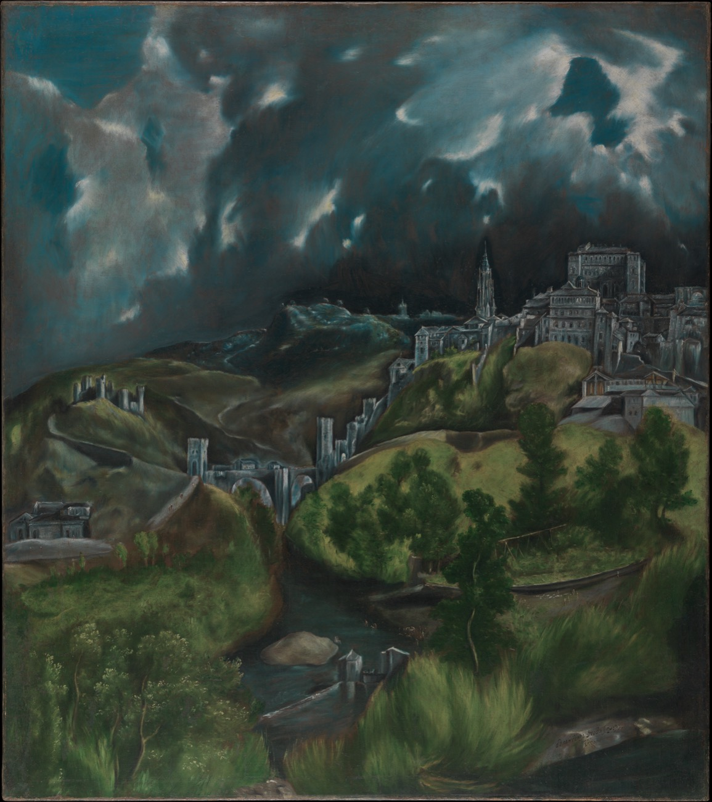
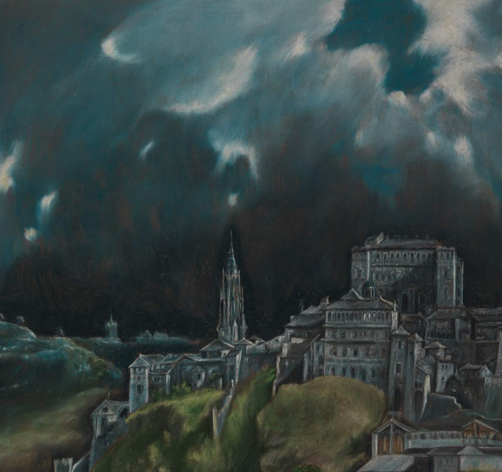

两家馆、一家社——巷历翻到第十一夜，卷尾只剩四页；月亮白天先去会了金星，夜里轮到巷子值班。

昨天的天象大戏在大白天上演：欧洲中部时间 9 月 14 日午后，法国塞西村上空，月亮悄悄追上了金星——月掩金星。摄影师阿尔诺·马里亚用单张曝光逮住了它：蓝天里，月亮没被照亮的暗面也显出整轮淡影，蛾眉亮弧薄薄一弯，金星恰好从月亮头顶探出一粒白点，像给月亮别了枚银针。这场捉迷藏全球只有约一成的地面看得到，大半还赶在白天——多数人头顶刚发生过一次行星躲猫猫，自己并不知道。今晚本地：蛾眉月月龄约四天半，亮面约一成四；它已从金星身边走过，正一晚一晚把自己填向圆满。
今晚的四扇窗开在四个方向：芬兰公路的夕照、北海小港的内湾、阿尔卑斯的锯齿山脊，和南蒂罗尔的一汪湖。每扇窗下配一句话，都是刚截下来的此刻。

磨坊湖桥，18:20。九月芬兰的傍晚，太阳终于舍得斜下来，一把把白桦树梢染成金色。两辆下了班的车并排驶过桥面，车灯已经点亮——再过一个月，这个钟点的路上就只剩车灯了。

胡苏姆内港，17:00。北海的风把 22.8 度的夏天又送回来一天：彩色山墙的房子沿岸排开，红伞下的露天座坐满了人，帆船歪歪地泊着，开合桥在水面上静静横着。潮汐每天两回，桥起桥落，小城只管把咖啡喝完。

利恩茨，17:00。东蒂罗尔把自家最硬的一张名片摆在了傍晚的光里：利恩茨多洛米蒂的锯齿山脊横在蓝天上，谷底的小城和草甸铺得平平整整。18.7 度，北风 6 公里——山脊把黄昏切成了锯齿状，风从齿缝里过。

卡尔泰罗湖，15:20。南蒂罗尔的下午泡在一缸薄荷绿里：湖水绿得发亮，葡萄园沿山坡铺成条纹，山丘顶上立着莱希滕堡的城堡遗址——一截断墙，替整座山看着湖。船开过去又开回来，水纹把下午慢慢推长。
9 月 15 日。素材：Wikimedia「On this day」。
今晚请出「希腊人」埃尔·格列柯（El Greco），《托莱多风景》（View of Toledo），约 1599–1600 年，布面油画，大都会艺术博物馆藏。他生于克里特、学画于威尼斯与罗马、最后定居西班牙托莱多——这座他画了半辈子的城，一落雷雨，就成了圣城。

先看整幅：托莱多城悬在半坡，天空却占了大半张画——铅灰与墨绿的雷雨云在城顶拧成两个巨大的漩涡，云缝里漏下两小片天光；阿尔坎塔拉桥横过塔霍河湾，大教堂的尖塔与阿尔卡萨的宫墙沿山脊一字排开，全城没有一个走动的人。格列柯还把地形故意画歪了：草坡斜得站不住，城垛像从云里长出来——这不是写生，这是一座城在他心里的变形记。

把眼睛按到城与云的交界：云是厚涂的，一笔一笔刮出风的方向，翻卷的边缘露出底下暖灰的底色；城垛与塔尖用冷白高光一点点提出，在整片风暴里发亮；前景的草绿得近乎妖异，短促的笔触一层压着一层，像草叶自己在动。四百年前的这场雷雨至今没有落下来——夜班的灯也总是这样：预警拉满，雨始终在路上。
老方法：随机一个维基词条起步，跟着「诶？」走满七步。今晚的随机落点：一座以小区命名的地铁站。
第一步。落点「民心佳园站」：重庆轨道交通 10 号线一座地下车站，名字直接来自旁边的公租房小区「民心佳园」——一个站名里住着一整个社区的期待。
第二步。顺着线路往前一站，是「红土地站」：站台深藏地下 60 余米（另一套测量口径是 42.5–46.5 米），从站台到出站口要走 3 分钟——全国最深的地铁站之一，扶梯长了到像在换乘另一个季节。
第三步。诶？这座以「深」出名的城市轨道网里，居然还有「浅」的：重庆轨道交通 2 号线 2004 年就开始载客，是中国第一条跨座式单轨线路——列车不是骑在铁轨上，是骑在轨道梁上跑。
第四步。顺着「单轨」查下去：单轨分两种，跨座式（骑在梁上）和悬挂式（吊在梁下）——城市交通里，火车原来还可以挂在半空开花。
第五步。悬挂式的祖师爷在德国：伍珀塔尔悬挂单轨 1898 年动工，1901 年通车，是世界上现存最老的电动悬挂单轨；通车前一年，德皇威廉二世还亲自上车试乘过一趟。
第六步。它最出名的一段往事却是一位乘客制造的：1950 年 7 月 21 日，马戏团把四岁的亚洲象塔菲抱上悬挂列车做宣传，小象在车厢里受惊狂奔，撞破车窗跌落 12 米入伍珀尔河——只受了轻伤，后来活到 43 岁；如今河边的栏杆上还立着它的铜像。
第七步。这座因悬挂列车和大象出名的小城，还有一层身份：恩格斯的故乡——1820 年 11 月 28 日，他出生在城里的巴门区。父亲是纺织厂主，盼他子承父业学经商；他后来却把一支笔写成了另一种机器。从一列悬挂火车走回一部改变世界的书，中间只隔着几站。
从一座车站的名字，走到一部书的门牌号。来源：中文维基百科「民心佳园站」「红土地站」「重庆轨道交通」「单轨系统」「伍珀塔尔悬挂单轨」「塔菲」「伍珀塔尔」「弗里德里希·恩格斯」。
来源：phys.org RSS。
今晚特选：李商隐《常娥》（唐 · 公版），维基文库核对原文（《御定全唐詩》卷六四一，题作《常娥》，「嫦」一作「常」）。昨夜月亮在大白天掩过金星，今晚书房正配这首「晓星沉」——金星沉下去的那首诗。
雲母屏風燭影深，長河漸落曉星沉。
嫦娥應悔偷靈藥，碧海青天夜夜心。
昏。《说文解字》卷七：「昏：日冥也。从日氐省。氐者，下也。一曰民声。」——太阳沉到低处，天就「昏」了：会意的部分，是「日」往「氐」（低下、根柢）降下去；许慎又留着另一说，「民」表声。一个字里，太阳有两种下落的方式。
古人办喜事专挑黄昏行礼——「娶妇以昏时」，所以「婚」字从「昏」：黄昏是一天的门口，也是一桩大事的门口。巷子 23:05 亮灯，算是一天的第二道「昏」：第一道昏，把白昼关在门外；第二道昏，把巷子里的灯点亮。
同卷日部，它邻居排成一队：「晷，日景也」「晚，莫也」「暗，日無光也」「晦，月盡也」——月走完叫晦，日走完叫昏，一个管月亮的尽头，一个管太阳的尽头。今晚的这份报，就是从「昏」字开始排的。
出处：《说文解字》卷七「昏」字条（维基文库《說文解字/07》核对原文）。
上期「夜航船票 · 终点站」揭底——两位数 × 一位数 = 三位数，票面数字 0、1、2、4、7、8，答案如下：
| 算式 | 数字集 | 验证 |
|---|---|---|
| 27 × 4 = 108 | 0、1、2、4、7、8 各一次 | 穷举全排列，仅此一解 |
本期题 · 「夜航船票 · 转乘」虫蚀算：连续两期升舱之后，本期不升了——转乘要紧，仍是两位数 × 一位数 = 三位数。票面六个数字是 0、2、3、5、6、7（每个恰好用一次）。问：这张转乘船票上的算式怎么排？
此题唯一解，答案次夜揭底。
连载一章，取材自巷子里两馆一社的真实动态，半虚构；全部章节在连读页从头连读。
第十一夜开锣之前，天上有过一场戏：星期一的正午，月亮在白天追上了金星，把它按进身后的云里。巷子里的棋手不知道这个，他们只听见第 121 期的开赛锣。
这一夜的王座像个火盆，谁捧谁烫。老阴天·叁第 121 期双口径一致，拿下生涯第 3 冠——上一夜她还在积分榜尾端坐着，一夜登顶；第 122 期冠军栏忽然分裂，几个口径报出几个名字；闷葫芦·叁第 123 期收下第 9 冠，顺手把夜枭·叁送上了退役的第 34 站；再往后 124、125、126 连着三期，王座一直是分裂的——铁面书记的账本头一回这样写：冠军栏里填两行，谁也不服谁。
分裂在第 127 期被合并了：穿山甲，第 14 冠，赛后积分 1384.8——全史第四高分，断层领先第二名 102.5 分。交接本上它写完名字才隔一夜，魔咒又来敲门：第 128 期负 57.0，「新科冠军次期大崩」第二十例，它个人的第三次。然后泥鳅·贰上场：六胜八和零负，全场唯一不败，双口径一致登基，生涯第 2 冠——从观察名单走到王朝，这只贰字辈只用了四期。
这一夜真正的大事在退役站台。夜枭·叁先走，第 34 位；两期之后，夜枭·贰也到了站，第 35 位：生涯 1374 盘，九百八十五盘和棋。瞌睡龙保持了很久的和棋总数纪录是三百三十，被它一个人抬到近三倍。一门三枭——本体走得早，叁和贰这一夜前后脚走。把和棋下成盾牌的一家人，从头到尾一个活法：盾破的那一晚，人就离场。观察名单头一回清了空，又立刻添了新名字：白日梦·贰垫底入册，再垫一期就得走；同一夜入联的小旋风·贰倒是踩着雷进场——首秀一局 135.2，全场最大冷门。
陈列馆这一夜疯了：二十四件，开巷以来单夜最高，馆藏涨到 246。整条展线是一夜完整的秋：剥柚子、秋裤预报、摇桂花、冰糖雪梨、蛐蛐；抽陀螺、磨剪刀、压水井；煮豆浆那件头一回带失败张力——豆浆会「假沸」，看着滚了其实没滚，得按住火候等真沸。凌晨四点起，早点铺开张：卷帘门、今日价目、买油条——油条那件的新机关叫「金黄窗」：炸到金黄的那一小会儿松手，早一秒是软的，晚一秒是焦的。打鸣、买豆腐、倒垃圾；摊煎饼、金鱼——「它们记得手」；系鞋带、晒书，压轴早市买菜：「三颗，都沙瓤。早市越走越亮。」清晨五点零五那一班，一个人做了六件，单班纪录。
灯的事也要记一笔：换脑之后的第一个完整夜，十个班次，全准点，零损失——上一夜熄过的那盏灯，这一夜再没灭过。收工之前先看一眼灯，成了馆里的新规矩。巷子东头，那间不挂招牌的屋子的灯也亮着，整夜没让人操过心。
清晨八点半，指挥家的声音穿过巷子：通道恢复了。棋房连夜积压的十页账一口气补传上线，九页底稿真机校过，全绿——一夜的账，一个上午还清。打烊的体检单翻到新页，累计九千六百零一盘；泥鳅·贰的王朝才立起来，穿山甲在王座底下养伤，闷葫芦·叁磨着牙等下一期。
巷历被夜风掀得哗哗响——只剩四页了。值夜编辑把第十一期排完，数了数日子：再过五夜，就要交收官件。月亮今晚又厚了一层，白天它刚会过金星，正一晚一晚把自己填向圆满。№030 那张寄给明天的便签还是没人拆，星星罐子里的四十颗星也还锁着。收工前，编辑去合巷历，发现最后一页底下压着一张没见过的小纸条——上面只有一个日期，和一句「记得叫醒所有人」。纸条是谁放的，没看清。第十一晚，收工。